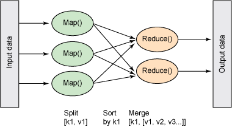

BigData внутри и снаружи
Неганов Александр 2016 @ D3C0D3
О себе
ikkeps @ github, twitter, vk
Сейчас - руководитель направления RTB в qmobi.com
Определение
buzzword
см. http://www.bullshitbingo.net/cards/bigdata/
Volume
Velocity
Variety
Применение
Статистика
BI
Machine learning
Обработка текста
Чем интересно?
Алгоритмы из разных областей
Опыт в применении различных инструментов
My d*** is bigger than yours
Volume + Velocity
"Обычные" RDBMS
Мало памяти, диски медленные
Индексы, схемы вот это всё
Не совсем то
Данные разношерстные (variety)
Алгоритмы другие
На одной машине
Распределенность
Алгоритм должен позволять "дробить" задачу.
Распределение заданий
Общее хранилище
Fault-tolerance
MapReduce
Map: f(o) -> [(k,v)]
Reduce: g([v]) -> v
Можно применять итеративно
MapReduce
Нужно группировать:
map -> группировка по ключам -> reduce
Где только не реализовано
А как же Velocity?
Результаты нужны быстро
Обрабатывать весь массив "медленно"
Partitioning
Возможность разбить на части
Обрабатывать только то что надо
Но разбивка одна, как правило
"Projections"
Сохраняем предрассчитаные данные
Да, Materialized views
Где-то руками, где-то изкоробки
Но тут вдруг
Память внезапно дешевле, ядер больше
Конечно, хочется и на одной машине чтоб было быстро
Columnar storage
Можно быстро и эффективно сжимать/разжимать
delta encoding, RLE, dictionary, lz4/snappy/whatever
Vectorization
Как БД, так и форматы сериализации
Variety
Сериализация по вкусу (json, csv, plain text)
Очистка данных - бо́льшая часть проблем
Но батчи же эффективнее?
Lambda Architecture

Lambda Architecture
Одинаковая реализация speed и batch layer
Query -> Merge
Инструменты
HP Vertica
MPP, Shared nothing, Partitioning
не NoSQL, совсем даже SQL, но круто!
Оптимизации - быстрее памяти!
Но дорого
Cassandra
MPP, Shared nothing, compression
Совсем NoSQL, почти key-value(s)
+Всякие счетчики, пользовательские структуры
Druid.io
Сделан в Metamarkets
Для timeseries статистики (timestamp, dimensions, metrics)
Columnar, MPP, Partitioning, Bitmap index, compression, lambda architecture
Можно обрабатывать в Hadoop
Пять типов нод
Hadoop
Мэйнстрим и основной игрок
HDFS, YARN, MapReduce
Множество инструментов и надстроек
Но скорее для реальной™ BigData
Spark
Moar in-memory!
Много коннекторов
Удобно для lambda architecture
Легко поиграться (python, java, scala)
Есть ML, Graph, Streaming, свой SQL
Elastic(search)
Изначально fulltext search
Двигаются в направлении БД общего назначения
MPP, fault-tolerant
Schema(less)
но в некоторых местах пока медленновато
Apache Kafka
Мэйнстрим
Кольцевой буффер
Но надо хранить текущий offset вместе с данными
R
¯\_(ツ)_/¯